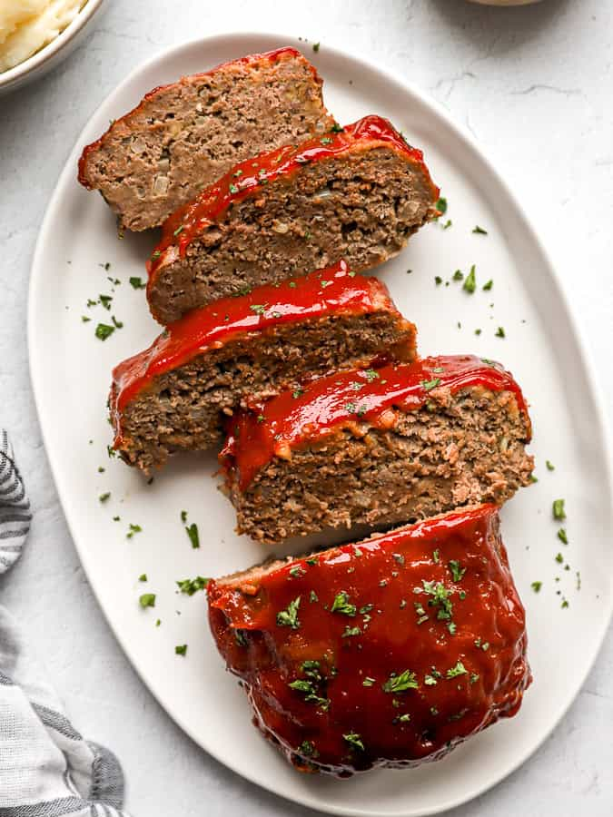

Classic Homemade Meatloaf

Description
This easy meatloaf recipe is the traditional homemade meatloaf which is so filling, so cozy and delicious. Take finer grind beef and mix with the right amount of finely minced onion, egg, milk, breadcrumbs, garlic powder, Worcestershire sauce, Italian seasoning, freshly cracked pepper and salt. This is essentially the glue that holds the meat together.
Mix with your hands until everything is evenly combined.Avoid overmixing. Place the meat mixture on a baking dish and shape it into a loaf. In a separate bowl mix ketchup, brown sugar, Worcestershire sauce and mustard which forms glaze. Spread the glaze evenly over and all sides of the loaf. Bake the loaf in the oven for 55 minutes. Let rest it for about 10 minutes and then slice it and serve with mashed potatoes and steamed green beans.
- Prep Time: 15 minutes.
- Cook Time: 50 minutes.
- Total Time: 1 hour 5 minutes
Ingredients
Meatloaf
- 1 large egg.
- 1/3 cup milk.
- 1 tsp Worcestershire sauce.
- 1/2 cup plain breadcrumbs.
- 1 tsp Italian seasoning.
- 1/2 tsp garlic powder.
- 1 tsp salt.
- 1/4 tsp freshly cracked black pepper.
- 1/2 cup minced onion.
- 1.5 lbs. ground beef (80/20).
Glaze
- 1/2 cup ketchup.
- 1 Tbsp brown sugar.
- 1 Tbsp Worcestershire sauce.
- 1 tsp yellow mustard.
Steps
- Preheat the oven to 350oF. In a small bowl whisk together with the egg, milk and Worcestershire sauce. In a separate small bowl, stir together the breadcrumbs, Italian seasoning, garlic powder, salt and pepper. Mince the onion.
- Add the ground beef, egg mixture, breadcrumb mixture and minced onion to a large bowl. Use your hands to mix the ingredients together until evenly combined. Avoid over mixing.
- Place the meatloaf mixture on a rimmed baking dish and shape it into a loaf that is approximately 4-inches wide, 8-inches long and 2-inches tall.
- In a separate small bowl, stir together the glaze ingredients (ketchup, brown sugar, Worcestershire sauce and mustard). Spread the glaze evenly over the top and sides of the meatloaf.
- Bake the meatloaf for 50-55 minutes, or until the internal temperature reaches 165oF. Allow the meatloaf to rest for 5-10 minutes after baking, then slice and serve.
Home